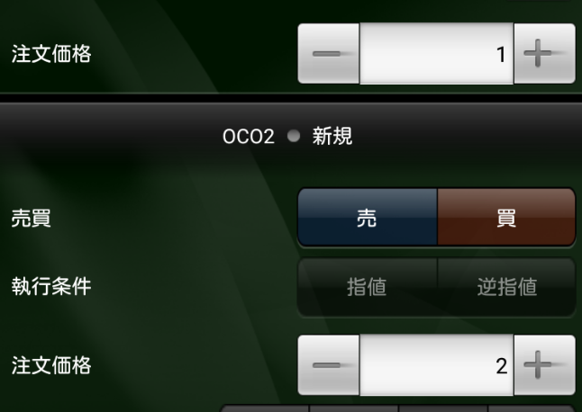
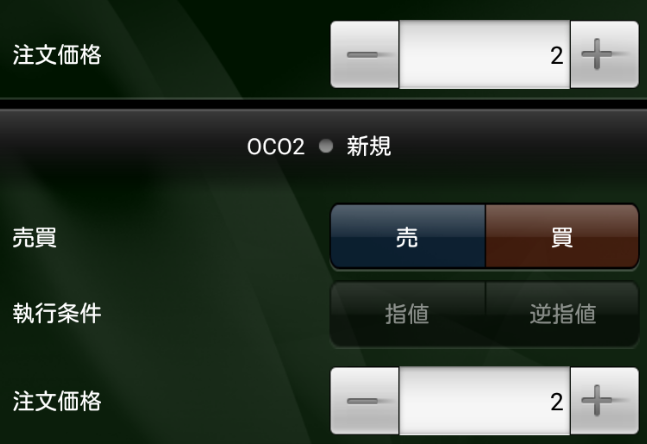

子layout xml
<TextView android:id="@+id/text_view"
android:layout_width="wrap_content"
android:layout_height="wrap_content" />
親layout xml
<include layout="@layout/view_contact_name" android:id="+id/test1"/>
<include layout="@layout/view_contact_name" android:id="+id/test2"/>
findViewByIdを複数回実行してViewを取得する
@Override
public void onViewCreated(View view, Bundle savedInstanceState) {
super.onViewCreated(view, savedInstanceState);
TextView tv1 = view.findViewById(R.id.test1).findViewById(R.id.text_view);
TextView tv2 = view.findViewById(R.id.test2).findViewById(R.id.text_view);
}
BaseSavedStateを継承したSavedStateクラスを定義する方法が一般的だが、コード量が増えてしまう。
コード例Bundleを使えば簡潔に書ける
コード例Custom Viewを複数並べると、onRestoreInstanceStateが実行された際に同じ状態になってしまうことがある
以下の例は「注文価格」の行がCustom Viewになっている
実行前 実行後
なぜそうなるか？
ViewGroup
@Override
protected void dispatchRestoreInstanceState(SparseArray container) {
super.dispatchRestoreInstanceState(container);
final int count = mChildrenCount;
final View[] children = mChildren;
for (int i = 0; i < count; i++) {
View c = children[i];
if ((c.mViewFlags & PARENT_SAVE_DISABLED_MASK) != PARENT_SAVE_DISABLED) {
c.dispatchRestoreInstanceState(container);
}
}
}
Viewの状態を保存するcontainerはFragment/Activity毎に一つ
View
protected void dispatchRestoreInstanceState(SparseArray container) {
if (mID != NO_ID) {
Parcelable state = container.get(mID);
if (state != null) {
// Log.i("View", "Restoreing #" + Integer.toHexString(mID)
// + ": " + state);
mPrivateFlags &= ~PFLAG_SAVE_STATE_CALLED;
onRestoreInstanceState(state);
if ((mPrivateFlags & PFLAG_SAVE_STATE_CALLED) == 0) {
throw new IllegalStateException(
"Derived class did not call super.onRestoreInstanceState()");
}
}
}
}
ViewのIDをkeyとしてstateをcontainerから取得するため、IDが同じViewには同じstateが渡される
解決策
android:id属性を削除する。android:tagを付ける。findViewWithTagを使用する
@Override
public void onFinishInflate() {
inflate(getContext(), R.layout.parent_view, this);
childView = ((NumberPicker) this.findViewWithTag("child_view"));
}